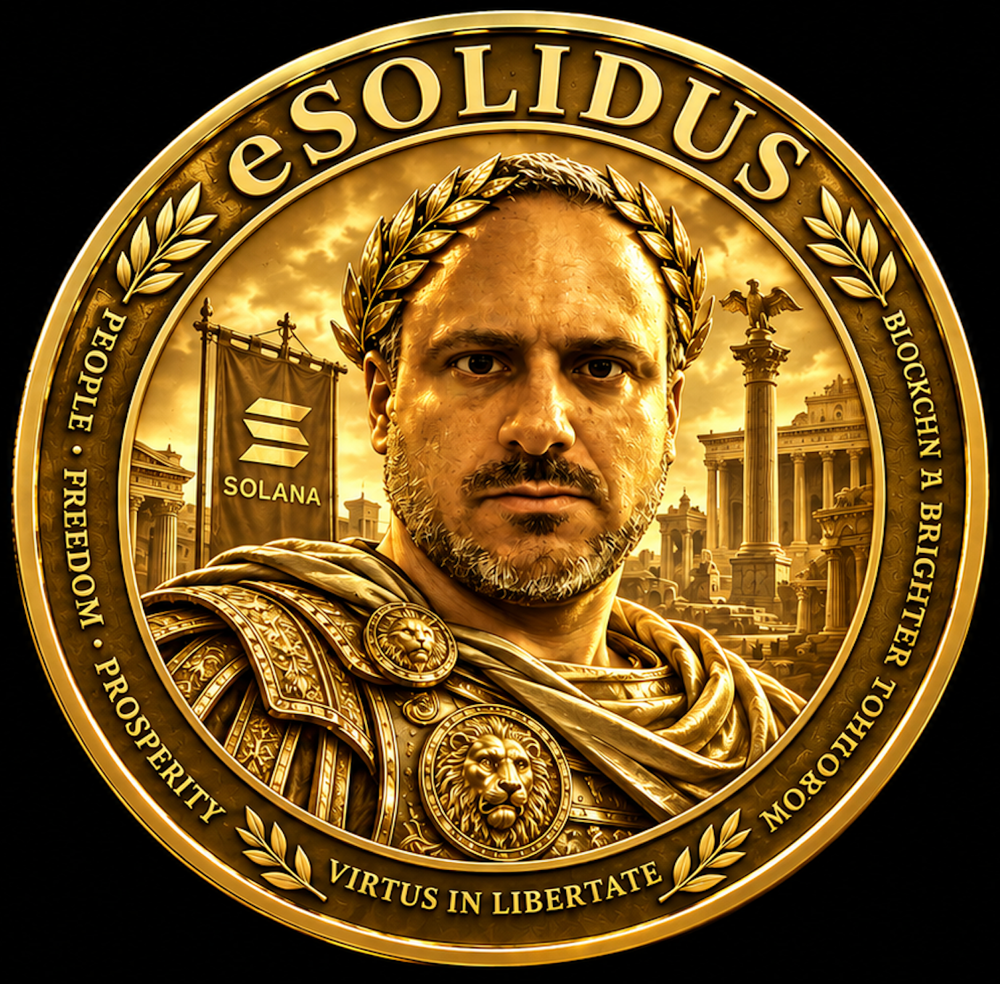
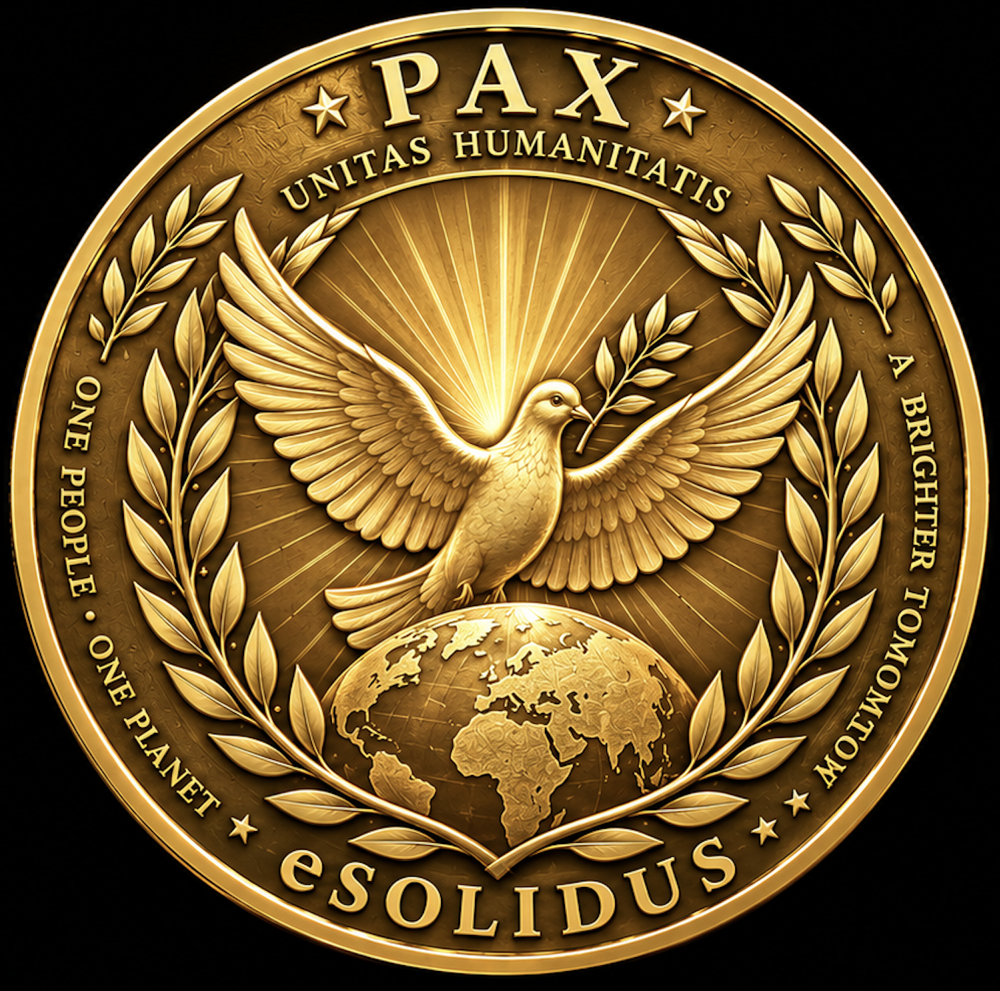

GENESIS
Technical foundation
& token creation
GENESIS 2026 · COMMUNITY 2027 · VISION 2032
A long-term Solana project inspired by the Solidus — a symbol of enduring value, trust and continuity.
SLOW AND STEADY WINS THE RACE.
DISCOVER eSOLIDUS →

CLICK THE COIN TO FLIP
eSOLIDUS is designed as a long-term project. The objective is not a short-lived launch, but a clear identity that can grow carefully over time.
No artificial promises. No rush. The first task is to establish the technical foundation and let the community develop naturally from 2027 onward.
A modern token.
A timeless idea.
The imperial portrait represents identity, continuity and the enduring idea of value.
The reverse represents peace, unity and prosperity — the values behind the PAX symbol.
Technical foundation
& token creation
First community
initiatives
Exploring meaningful
utility
Growing community
& ecosystem
The reverse side of eSOLIDUS represents PAX — the idea that lasting value is not only measured in numbers, but also in what connects people.
A LONG-TERM DIGITAL PROJECT
Built slowly. Built transparently. Built to last.